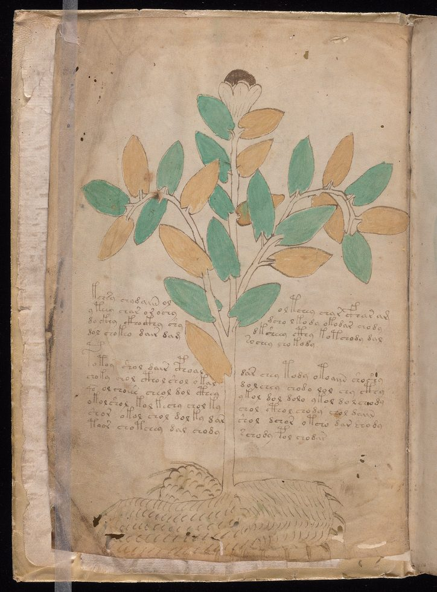
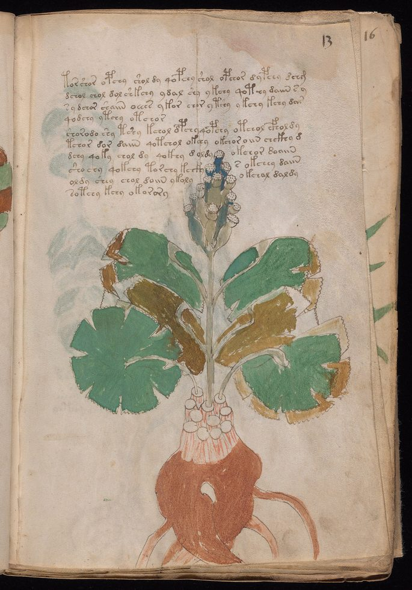
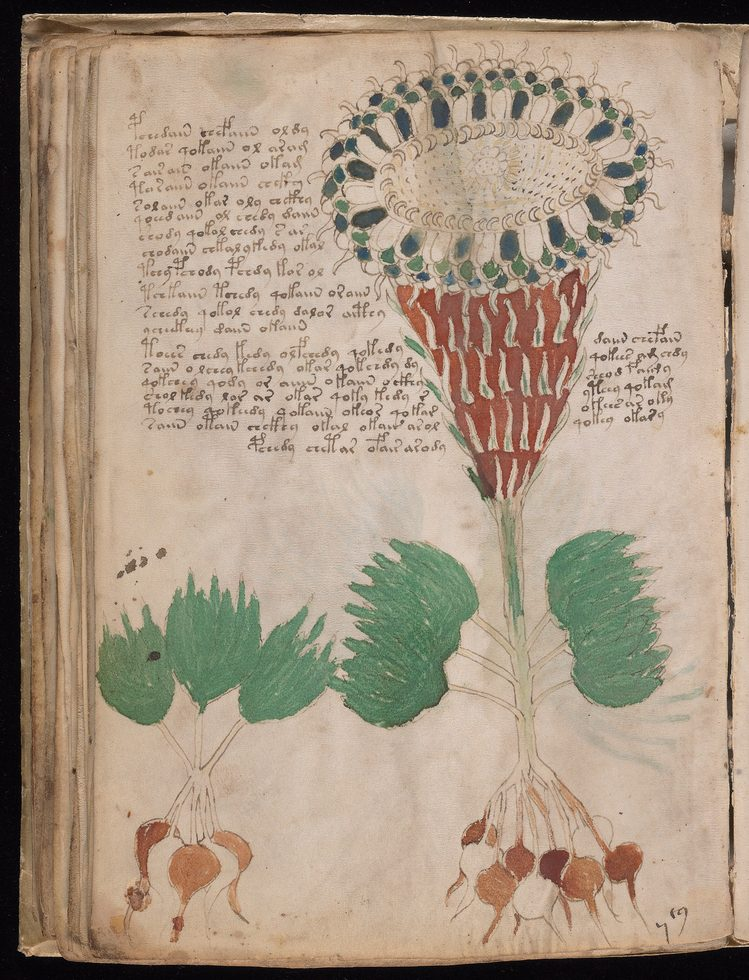
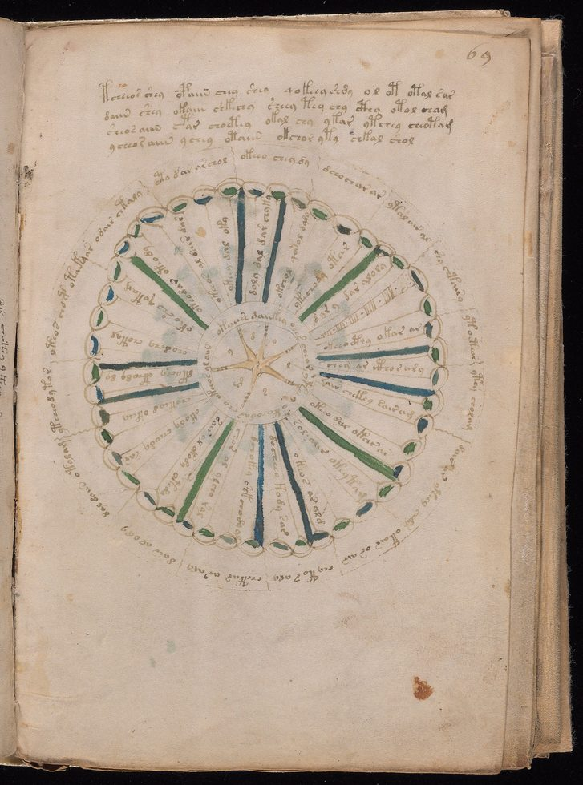
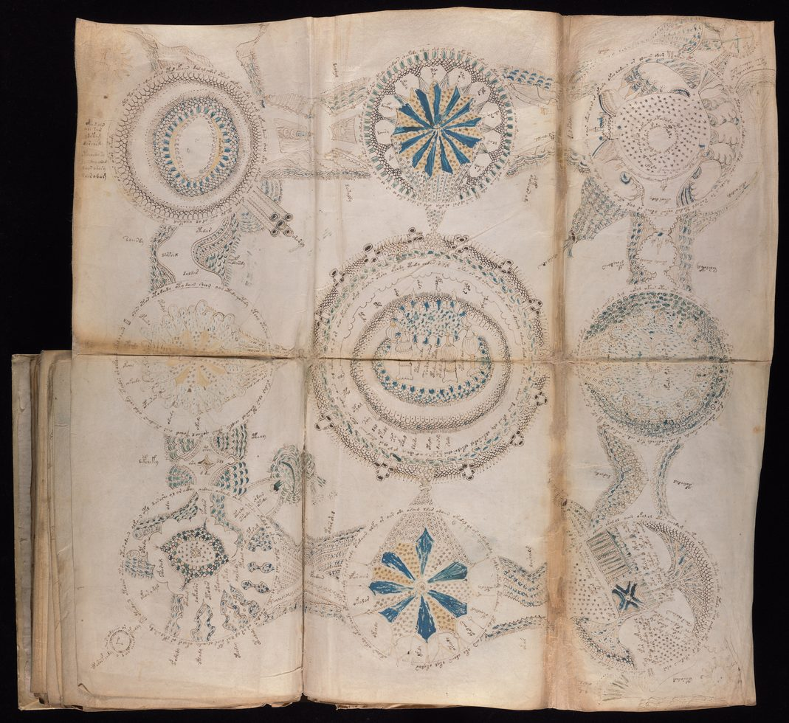
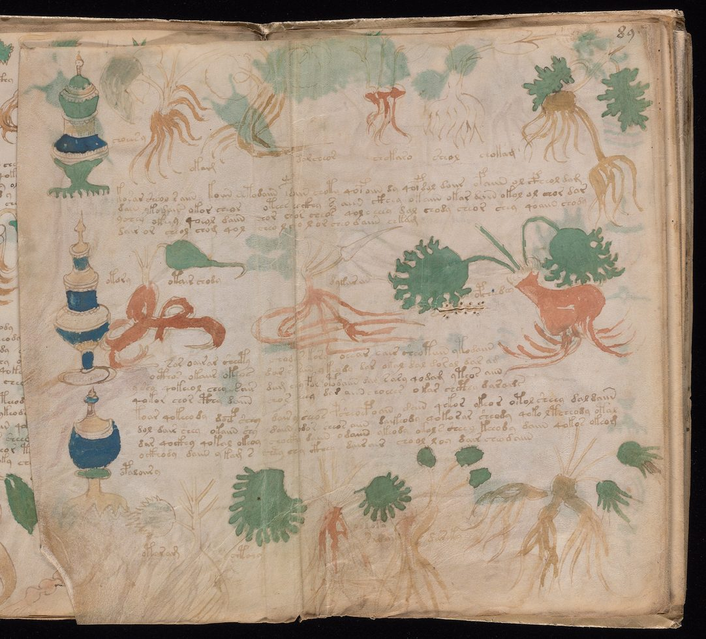
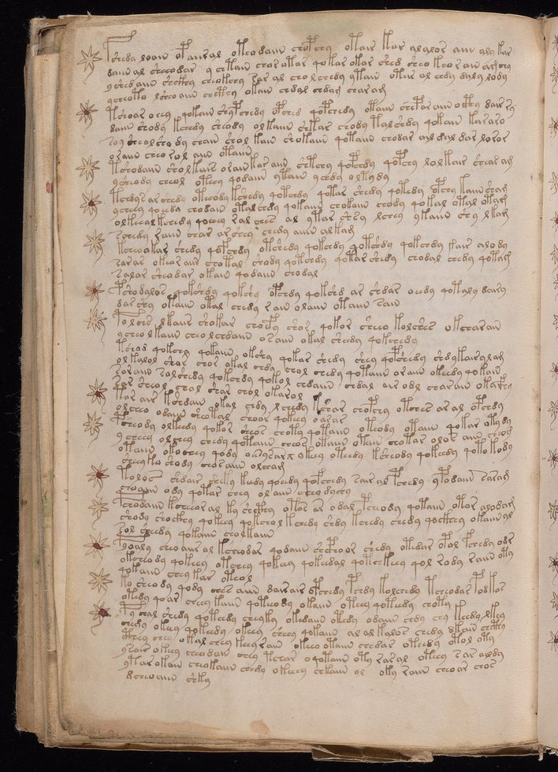
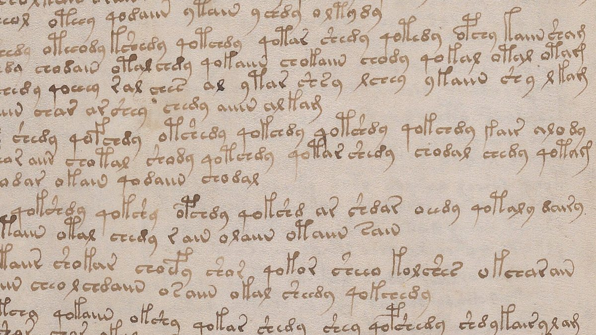

O manuscrito Voynich
O pergaminho é autêntico. A tinta é do período. A escrita obedece às leis estatísticas de uma língua real, e cinco mãos diferentes a copiaram com disciplina de copista profissional. Ninguém nunca leu uma linha.
- Acervo
- Beinecke MS 408, Yale
- Suporte
- Pergaminho de vitela
- Datação C-14
- 1404 – 1438
- Extensão
- ≈ 240 páginas
- Palavras
- ≈ 38 mil
- Status
- Não decifrado
É um livro pequeno. Vinte e três centímetros e meio de altura por dezesseis de largura, cinco de espessura — cabe numa mão, embora ninguém o segure assim há muito tempo. O pergaminho é fino e ficou macio com o tempo; foram precisos os couros de quatorze ou quinze bezerros para montá-lo. Quem o folheia com luva vê primeiro as plantas: folhagens verdes e ocres, raízes vermelhas desenhadas com o cuidado de um herbário. Depois vêm os diagramas circulares, as figuras em banhos, as raízes isoladas ao lado de recipientes. E, em toda página, corre o texto.
A letra é firme. Não há rasura, não há hesitação, não há a caligrafia irregular de quem inventa enquanto escreve. As palavras se separam por espaços como em qualquer livro europeu do século XV. Os parágrafos começam e terminam onde deveriam. Tudo naquela página diz que ali está escrito alguma coisa.
Só que o alfabeto não é nenhum alfabeto conhecido, e em mais de cem anos de tentativas — por criptógrafos militares, linguistas computacionais, medievalistas, amadores obstinados e pelo menos dois homens que morreram convencidos de ter conseguido — ninguém produziu uma leitura que outra pessoa consiga reproduzir.
01O livro, página a página
Antes de qualquer teoria, convém olhar. Estas são sete das 213 imagens que a Beinecke publicou do volume — três da seção botânica, que ocupa mais da metade do livro, e uma de cada uma das outras.







Repare no que as seções têm em comum. O texto ocupa sempre a mesma proporção da página. As ilustrações nunca invadem a coluna de escrita. Há um projeto gráfico ali, e ele é consistente do começo ao fim de um livro que levou muito tempo e muito dinheiro para ser feito.
02O que a matéria diz
Esta é a parte do caso que está resolvida, e resolvê-la eliminou a hipótese mais confortável.
Em 2009, a Universidade do Arizona datou amostras do pergaminho por radiocarbono. O resultado foi consistente em todas as folhas testadas: entre 1404 e 1438. O animal que forneceu aquela pele morreu na primeira metade do século XV.
A datação do suporte, sozinha, não provaria nada — pergaminho em branco podia ser guardado por décadas, e um falsário com acesso a um códice antigo teria material de sobra. Por isso a análise das tintas importa tanto. O exame dos pigmentos encontrou nanquim ferrogálico no texto e nos contornos, azurita moída no azul, ocre vermelho com hematita nos castanhos, compostos de cobre nos verdes. Nada disso é anacrônico: é exatamente o que se esperaria de um manuscrito europeu do período, e nada nas amostras aponta para material moderno.
03A cadeia de donos
O manuscrito reaparece no registro histórico em Praga, no começo do século XVII. A primeira folha traz uma assinatura hoje quase apagada, recuperada sob luz ultravioleta: Jacobus Horcicky de Tepenec, o químico imperial de Rodolfo II. É a evidência material mais antiga de posse.
A história de que o próprio Rodolfo II teria comprado o livro por seiscentos ducados — uma fortuna — aparece numa carta escrita décadas depois e é relatada como coisa ouvida, não presenciada. Circula como fato desde então. Não há documento de compra.
O primeiro dono comprovado por documento é Georg Baresch, alquimista de Praga, que em 1639 escreveu ao jesuíta Athanasius Kircher, em Roma, pedindo ajuda para ler o livro que tinha em casa e chamava de esfinge. Kircher, que era tido como o homem capaz de ler qualquer coisa — havia publicado traduções dos hieróglifos egípcios que se revelariam inteiramente fantasiosas —, não respondeu ao que interessava.
Em 1665 ou 1666, Jan Marek Marci, reitor da Universidade Carolina, enviou o manuscrito a Kircher junto com a carta que hoje é conservada com o livro. Dali ele foi para a biblioteca do Colégio Romano, e da biblioteca para a Villa Mondragone, em Frascati, quando os jesuítas precisaram esconder seu acervo. Em 1912, Wilfrid Voynich comprou um lote de trinta manuscritos dos jesuítas. Este estava no lote, e passou a levar o nome dele.
Depois vieram a viúva Ethel, a secretária Anne Nill, o antiquário Hans Kraus — que o comprou por vinte e quatro mil e quinhentos dólares em 1961, pediu cento e sessenta mil e não achou comprador. Em 1969, Kraus o doou a Yale, onde ele é a MS 408 e onde está até hoje.
04A escrita
Aqui o caso fica difícil de um jeito específico: o texto se comporta simultaneamente como língua e como não-língua.

São cerca de 38 mil palavras no total, das quais aproximadamente 9 mil distintas, escritas com um inventário de 20 a 25 caracteres principais. As palavras têm quase sempre entre duas e dez letras — praticamente não existem palavras de uma letra só nem palavras muito longas, o que já é uma regularidade incomum.
O que parece língua. A distribuição de frequência das palavras obedece à lei de Zipf: a palavra mais comum aparece cerca de duas vezes mais que a segunda e três vezes mais que a terceira, que é o padrão de qualquer idioma natural e não o de texto aleatório. As palavras têm estrutura interna regular, com algo parecido com prefixo, raiz e sufixo, e certos caracteres só ocorrem em certas posições. Há duas variantes estatísticas distribuídas por seções diferentes, identificadas nos anos 1970 e chamadas desde então de Voynich A e Voynich B — como se fossem dois dialetos, ou duas mãos com hábitos distintos.
O que não parece. A entropia condicional do texto é baixa demais. Em qualquer língua natural fica em torno de 3 a 4; aqui fica perto de 2. Isso significa que, sabendo uma letra, é fácil demais prever a seguinte — o texto é mais previsível do que qualquer idioma conhecido. E as palavras se repetem em sequência com uma frequência que nenhuma língua tolera: há trechos em que a mesma palavra aparece duas, três vezes seguidas, e trechos em que palavras quase idênticas se sucedem, variando por uma letra.
Em 2020, a medievalista Lisa Fagin Davis identificou, pela análise das mãos, que o manuscrito foi copiado por cinco escribas diferentes, trabalhando com o mesmo sistema de escrita e as mesmas convenções. Isso muda a natureza do problema. Não é o delírio privado de uma pessoa: é uma equipe treinada, com regras compartilhadas.
05As teorias, da mais sóbria à mais improvável
Uma língua real, escrita em cifra ou em alfabeto próprio
A hipótese mais econômica: existe um texto ali, em algum idioma, e o que vemos é esse idioma cifrado ou transcrito num alfabeto inventado. A aderência à lei de Zipf e a estrutura interna das palavras apontam nessa direção.
O obstáculo é a entropia baixa. Cifras de substituição simples preservam a estatística da língua de origem, e nenhuma língua de origem foi encontrada — testaram-se latim, alemão, hebraico, línguas turcomanas, dialetos românicos. Cifras mais complexas, que explicariam a anomalia, exigiriam do século XV uma sofisticação que a criptografia da época não documenta.
Uma língua construída
William Friedman — o criptógrafo que quebrou a máquina diplomática japonesa na Segunda Guerra e que dedicou anos ao Voynich sem resultado — terminou inclinado a esta leitura: o texto seria escrito numa língua artificial, construída segundo regras, e não a cifra de um idioma existente. Explicaria a regularidade excessiva das palavras e a entropia baixa.
O problema é a data. Projetos de língua filosófica universal são coisa do século XVII, duzentos anos depois do pergaminho. Não é impossível que alguém tenha chegado lá antes — é apenas sem precedente.
Um embuste da própria época
Em 2003, Gordon Rugg mostrou que é possível gerar texto com as propriedades do Voynich usando uma grade de Cardano — uma folha perfurada deslizada sobre uma tabela de sílabas, produzindo palavras plausíveis sem qualquer significado. Um golpista do século XV poderia ter fabricado o livro para vendê-lo a um colecionador rico.
Contra a tese pesam três coisas. A grade de Cardano é descrita pela primeira vez em 1550, mais de um século depois do pergaminho. A distinção entre Voynich A e B é um refinamento que nenhum falsário precisaria produzir. E o custo é desproporcional: quinze bezerros, meses de trabalho de cinco copistas e um ilustrador, para um golpe que qualquer comprador desfaria pedindo uma leitura em voz alta.
As decifrações anunciadas
Em 1921, William Newbold anunciou ter lido o manuscrito: haveria uma micrografia escondida dentro de cada traço, e o autor seria Roger Bacon, que teria usado microscópio e telescópio séculos antes de inventados. Em 1931, John Manly demonstrou que as tais microletras eram craquelê da tinta seca. Newbold tinha lido rachaduras.
O padrão se repetiu. Stephen Bax propôs, em 2014, identificar nomes próprios a partir das ilustrações, e chegou a dez palavras antes de morrer, sem consenso. Nicholas Gibbs anunciou em 2017 um latim abreviado de forma idiossincrática: especialistas apontaram que o resultado não produz latim com sentido. Gerard Cheshire publicou em 2019 um suposto proto-romance; a Universidade de Bristol retirou o comunicado e se afastou do trabalho, e a medievalista Lisa Fagin Davis resumiu o resultado como mais um disparate aspiracional, circular e autoconfirmatório.
O denominador comum é metodológico. Todas as decifrações anunciadas funcionam nas mãos de quem as propõe e param de funcionar nas mãos de qualquer outra pessoa — que é a definição prática de não decifrar.
Origem extraterrestre, viagem no tempo, conhecimento perdido
Não há nada no objeto que sustente isso. O pergaminho é de vitela europeia, as tintas são as da oficina do período, o formato é o de um códice comum e a encadernação é modesta. O livro é material e local até o último detalhe.
Vale notar o que essa leitura faz: ela transforma um problema interessante — uma comunidade de cinco copistas europeus escrevendo durante meses num sistema que dominavam e que perdemos — num enigma sem agentes humanos. É menos, não mais.
06Cronologia
- 1404 – 1438Intervalo da datação por radiocarbono do pergaminho, feita pela Universidade do Arizona em 2009.
- início do séc. XVIIJacobus Horcicky de Tepenec, químico imperial de Rodolfo II, assina a primeira folha. É a posse mais antiga comprovada.
- 1639Georg Baresch escreve a Athanasius Kircher pedindo ajuda para ler o livro. É o primeiro documento que descreve o manuscrito.
- 1665 ou 1666Jan Marek Marci envia o manuscrito a Kircher com a carta que hoje acompanha o volume.
- 1912Wilfrid Voynich compra um lote de manuscritos jesuítas na Villa Mondragone, em Frascati. O livro passa a levar o seu nome.
- 1921William Newbold anuncia a decifração e a atribuição a Roger Bacon.
- 1931John Manly demonstra que as microletras de Newbold são craquelê da tinta. A tese cai.
- 1944 – 46 e 1962 – 63William Friedman organiza dois grupos de estudo com criptógrafos militares e transcreve o texto em cartões perfurados. Sem resultado.
- 1969Hans Kraus doa o manuscrito à Universidade Yale, onde recebe a cota Beinecke MS 408.
- anos 1970Prescott Currier identifica as duas variantes estatísticas, Voynich A e Voynich B.
- 2003Gordon Rugg publica o método da grade de Cardano e propõe a hipótese do embuste.
- 2009Datação por radiocarbono e análise de pigmentos. A hipótese de falsificação moderna cai.
- 2020Lisa Fagin Davis identifica cinco mãos distintas de copista no manuscrito.
- 2024A análise multiespectral feita em 2014 pelo Lazarus Project é reexaminada e revela colunas de letras escondidas na margem da primeira folha.
07O que continua em aberto
O achado mais recente não decifra nada, e por isso mesmo é o melhor resumo do caso.
Em 2014, o Lazarus Project, da Universidade de Rochester, fotografou dez páginas do manuscrito em faixas do espectro invisíveis a olho nu. As imagens ficaram guardadas. Em 2024, Lisa Fagin Davis as reexaminou e encontrou, na margem direita da primeira folha, três colunas de letras apagadas havia séculos: duas em alfabeto latino e uma em caracteres do próprio manuscrito. Pela letra, ela atribuiu as anotações a Jan Marek Marci — o reitor que teve o livro nas mãos por volta de 1663 e o enviou a Roma.
Marci estava montando uma tabela de correspondências. Tentando, em outras palavras, exatamente o que todo mundo tentou depois dele, com exatamente o mesmo resultado. Ele apagou as colunas e mandou o livro embora.
Três perguntas permanecem, e nenhuma depende de tecnologia melhor. Se há conteúdo — a estatística não decide entre língua e geração mecânica de palavras, porque um sistema suficientemente regular produz as duas assinaturas. Que língua seria — e essa pode ser insolúvel por princípio, se for um idioma sem nenhum outro registro escrito. Para quem o livro foi feito — cinco copistas e um ilustrador trabalhando meses implicam encomenda, dinheiro e destinatário, e não se sabe nada sobre nenhum dos três.
Há uma possibilidade que raramente é dita em voz alta e que o dossiê não tem como descartar: a de que o manuscrito seja perfeitamente legível para quem tivesse a chave, e a chave simplesmente não exista mais. Nem todo segredo é guardado. Alguns só são esquecidos.
08Fontes consultadas
Este dossiê é texto autoral. As fontes abaixo foram consultadas para apuração de datas, medidas e atribuições; nenhuma foi reproduzida.
- Beinecke Rare Book & Manuscript Library, Yale University — ficha e digitalização integral do MS 408.
- Verbete enciclopédico consolidado sobre o manuscrito — descrição física, cadeia de proprietários, estatística do texto e histórico das tentativas de decifração.
- Universidade do Arizona — datação por radiocarbono do pergaminho, 2009.
- Análise de tintas e pigmentos encomendada pela Beinecke, 2009.
- Davis, L. F. — identificação das cinco mãos de copista (2020) e leitura dos alfabetos marginais nas imagens multiespectrais do Lazarus Project (2024).
- Cobertura técnica do reexame multiespectral de 2024 e da atribuição das anotações a Jan Marek Marci.
- Rugg, G. — demonstração do método da grade de Cardano, 2003.
- Registro público das decifrações anunciadas por Newbold (1921), Bax (2014), Gibbs (2017) e Cheshire (2019), e das respectivas refutações.